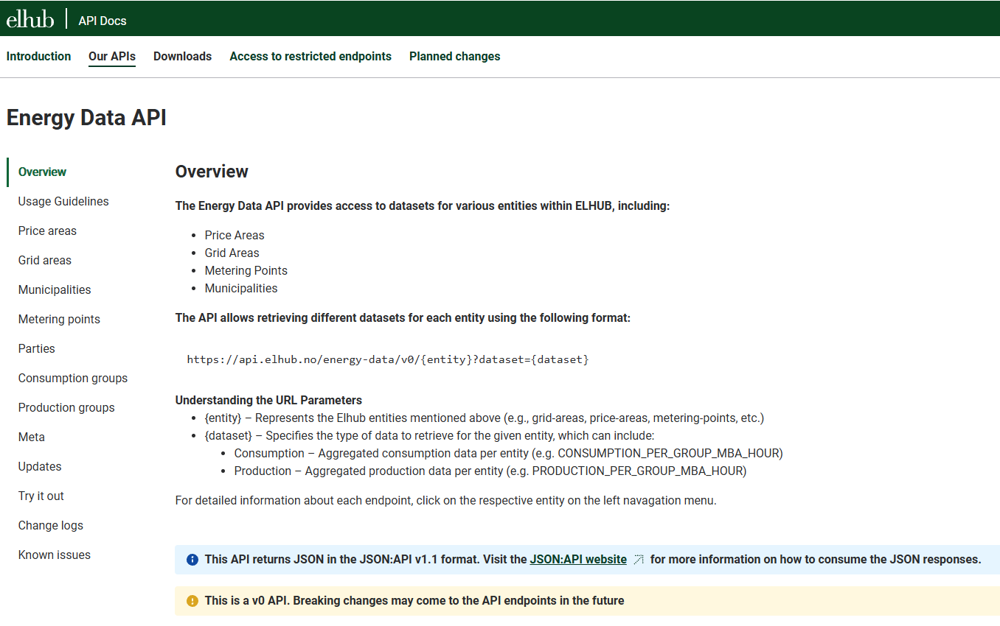
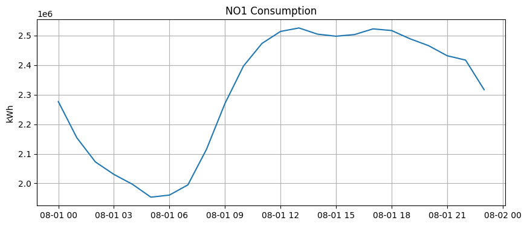
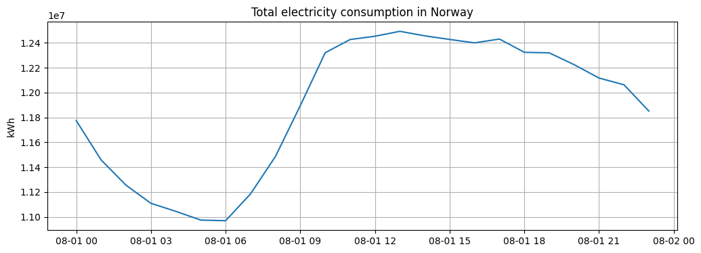
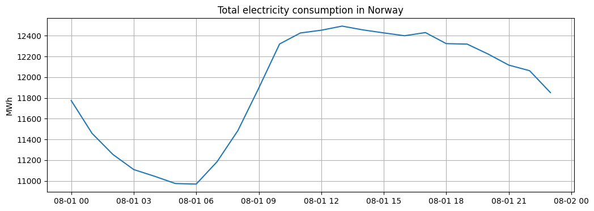
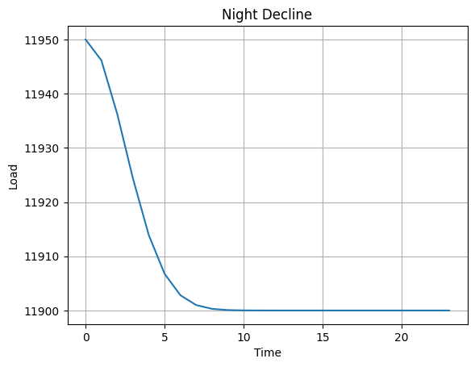
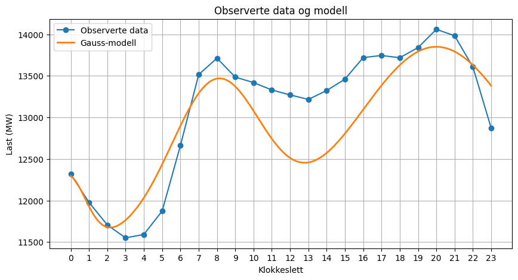
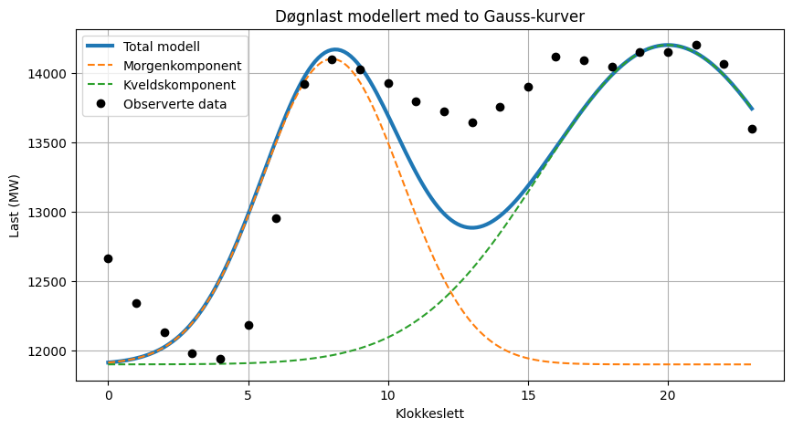
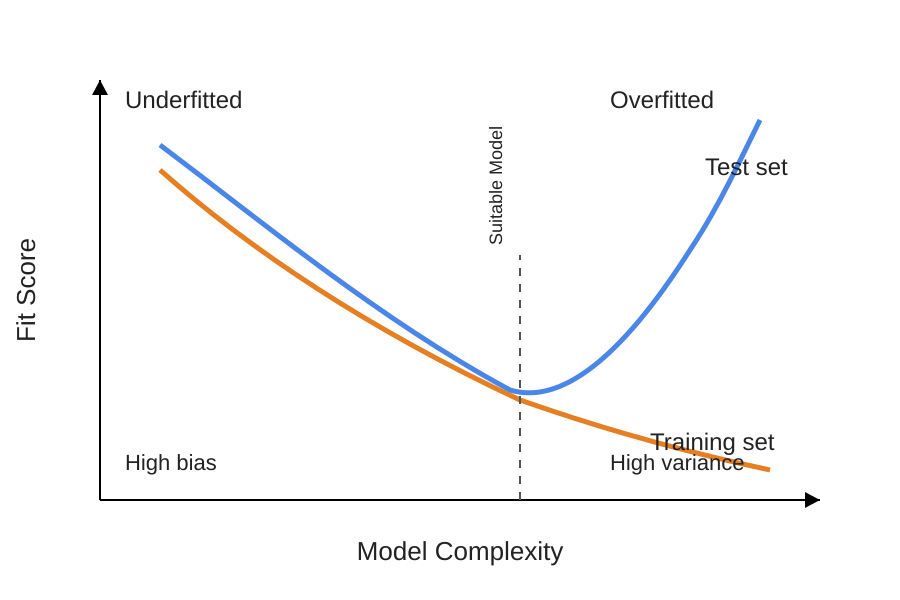
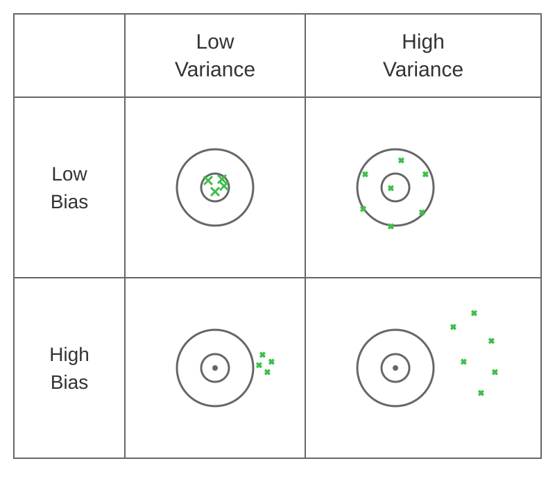

Treffsikkerhet#
Hvor trefsikker er modellen.
import requests
url = "https://api.elhub.no/energy-data/v0/price-areas"
params = {
"dataset": "CONSUMPTION_PER_GROUP_MBA_HOUR"
}
r = requests.get(url, params=params)
#print(r.status_code)
#print(r.text)
print(r.status_code)
#print(r.text[:1000])
200
from IPython.display import Image, display
display(Image("../images/elhubAPIdocs.png"))

import requests
import pandas as pd
r = requests.get(
"https://api.elhub.no/energy-data/v0/price-areas",
params={"dataset": "CONSUMPTION_PER_GROUP_MBA_HOUR"}
)
data = r.json()
rows = []
for area in data["data"]:
observations = area["attributes"].get(
"consumptionPerGroupMbaHour",
[]
)
rows.extend(observations)
df = pd.DataFrame(rows)
print(df.head())
startTime endTime priceArea \
0 2026-08-08T17:00:00+02:00 2026-08-08T18:00:00+02:00 NO1
1 2026-08-08T18:00:00+02:00 2026-08-08T19:00:00+02:00 NO1
2 2026-08-08T19:00:00+02:00 2026-08-08T20:00:00+02:00 NO1
3 2026-08-08T20:00:00+02:00 2026-08-08T21:00:00+02:00 NO1
4 2026-08-08T21:00:00+02:00 2026-08-08T22:00:00+02:00 NO1
consumptionGroup quantityKwh lastUpdatedTime meteringPointCount
0 cabin 67638.870 2026-08-22T17:52:56+02:00 111179
1 cabin 70722.800 2026-08-22T17:52:56+02:00 111179
2 cabin 69999.510 2026-08-22T17:52:56+02:00 111179
3 cabin 67058.580 2026-08-22T17:52:56+02:00 111179
4 cabin 64574.445 2026-08-22T17:52:56+02:00 111179
import requests
r = requests.get(
"https://api.elhub.no/energy-data/v0/price-areas",
params={"dataset": "CONSUMPTION_PER_GROUP_MBA_HOUR"}
)
data = r.json()
for area in data["data"]:
print(
area["id"],
area["attributes"]["eic"]
)
* *
NO1 10YNO-1--------2
NO2 10YNO-2--------T
NO3 10YNO-3--------J
NO4 10YNO-4--------9
NO5 10Y1001A1001A48H
r = requests.get(
"https://api.elhub.no/energy-data/v0/municipalities",
params={"dataset": "CONSUMPTION_PER_GROUP_MUNICIPALITY_HOUR"}
)
data = r.json()
municipalities = [
item["attributes"]["name"]
for item in data["data"]
]
print(municipalities[:20])
['*', 'Ukjent tilhørighet', 'Oslo', 'Eigersund', 'Stavanger', 'Haugesund', 'Sandnes', 'Sokndal', 'Lund', 'Bjerkreim', 'Hå', 'Klepp', 'Time', 'Gjesdal', 'Sola', 'Randaberg', 'Strand', 'Hjelmeland', 'Suldal', 'Sauda']
r = requests.get(
"https://api.elhub.no/energy-data/v0/grid-areas",
params={"dataset": "CONSUMPTION_PER_GROUP_MGA_HOUR"}
)
data = r.json()
for item in data["data"][:10]:
print(item["id"])
50Y-0Z1EKQEJIW-P
50Y-7FS806KF24QR
50Y-8E5D7BRHEGPN
50Y-AABJ1ZGH7DNR
50Y-CC8CR1D9AVRE
50Y-DNIYJ0PY0-73
50Y-Q5-R1AYXMAY0
50Y-QFBCAF1Y2L6K
50Y-Z0QKQEJIWZ1Z
50Y003TZ2AXX811M
import requests
r = requests.get(
"https://api.elhub.no/energy-data/v0/price-areas",
params={
"dataset": "CONSUMPTION_PER_GROUP_MBA_HOUR"
}
)
data = r.json()
areas = [
item["id"]
for item in data["data"]
]
print(areas)
['*', 'NO1', 'NO2', 'NO3', 'NO4', 'NO5']
load = (
df.groupby(["startTime", "priceArea"])
["quantityKwh"]
.sum()
.reset_index()
)
print(load.head())
startTime priceArea quantityKwh
0 2026-08-08T17:00:00+02:00 NO1 2646637.570
1 2026-08-08T17:00:00+02:00 NO2 3624778.863
2 2026-08-08T17:00:00+02:00 NO3 2781978.652
3 2026-08-08T17:00:00+02:00 NO4 1871628.405
4 2026-08-08T17:00:00+02:00 NO5 2093155.201
load = (
df.groupby("startTime")
["quantityKwh"]
.sum()
)
load.index = pd.to_datetime(load.index)
print(load.index)
DatetimeIndex(['2026-08-08 17:00:00+02:00', '2026-08-08 18:00:00+02:00',
'2026-08-08 19:00:00+02:00', '2026-08-08 20:00:00+02:00',
'2026-08-08 21:00:00+02:00', '2026-08-08 22:00:00+02:00',
'2026-08-08 23:00:00+02:00', '2026-08-09 00:00:00+02:00',
'2026-08-09 01:00:00+02:00', '2026-08-09 02:00:00+02:00',
...
'2026-09-06 14:00:00+02:00', '2026-09-06 15:00:00+02:00',
'2026-09-06 16:00:00+02:00', '2026-09-06 17:00:00+02:00',
'2026-09-06 18:00:00+02:00', '2026-09-06 19:00:00+02:00',
'2026-09-06 20:00:00+02:00', '2026-09-06 21:00:00+02:00',
'2026-09-06 22:00:00+02:00', '2026-09-06 23:00:00+02:00'],
dtype='datetime64[ns, UTC+02:00]', name='startTime', length=703, freq=None)
groups = set()
for area in data["data"]:
for obs in area["attributes"].get("consumptionPerGroupMbaHour", []):
groups.add(obs["consumptionGroup"])
sorted(groups)
['cabin', 'household', 'primary', 'secondary', 'tertiary']
%whos
Variable Type Data/Info
--------------------------------------
Image type <class 'IPython.core.display.Image'>
area dict n=3
areas list n=6
data dict n=3
display function <function display at 0x000002CDEF901510>
item dict n=4
json module <module 'json' from 'C:\\<...>\lib\\json\\__init__.py'>
municipalities list n=361
params dict n=1
pd module <module 'pandas' from 'C:<...>es\\pandas\\__init__.py'>
r Response <Response [200]>
requests module <module 'requests' from '<...>\\requests\\__init__.py'>
url str https://api.elhub.no/energy-data/v0/price-areas
import requests
r = requests.get(
"https://api.elhub.no/energy-data/v0/price-areas",
params={
"dataset": "CONSUMPTION_PER_GROUP_MBA_HOUR",
"startDate": "2026-08-01",
"endDate": "2026-08-02"
}
)
print(r.status_code)
200
data = r.json()
print(len(data["data"]))
6
[item["id"] for item in data["data"]]
['*', 'NO1', 'NO2', 'NO3', 'NO4', 'NO5']
import pandas as pd
rows = []
for area in data["data"]:
rows.extend(
area["attributes"].get(
"consumptionPerGroupMbaHour",
[]
)
)
df = pd.DataFrame(rows)
print(df.shape)
print(df.columns.tolist())
print(df.head())
(600, 7)
['startTime', 'endTime', 'priceArea', 'consumptionGroup', 'quantityKwh', 'lastUpdatedTime', 'meteringPointCount']
startTime endTime priceArea \
0 2026-08-01T00:00:00+02:00 2026-08-01T01:00:00+02:00 NO1
1 2026-08-01T01:00:00+02:00 2026-08-01T02:00:00+02:00 NO1
2 2026-08-01T02:00:00+02:00 2026-08-01T03:00:00+02:00 NO1
3 2026-08-01T03:00:00+02:00 2026-08-01T04:00:00+02:00 NO1
4 2026-08-01T04:00:00+02:00 2026-08-01T05:00:00+02:00 NO1
consumptionGroup quantityKwh lastUpdatedTime meteringPointCount
0 cabin 60997.150 2026-08-15T18:46:23+02:00 111177
1 cabin 55801.180 2026-08-15T18:46:23+02:00 111177
2 cabin 52910.887 2026-08-15T18:46:23+02:00 111177
3 cabin 51678.773 2026-08-15T18:46:23+02:00 111177
4 cabin 50843.164 2026-08-15T18:46:23+02:00 111177
load = (
df.groupby(["startTime", "priceArea"])["quantityKwh"]
.sum()
.reset_index()
)
load["startTime"] = pd.to_datetime(load["startTime"])
load.head()
| startTime | priceArea | quantityKwh | |
|---|---|---|---|
| 0 | 2026-08-01 00:00:00+02:00 | NO1 | 2276484.884 |
| 1 | 2026-08-01 00:00:00+02:00 | NO2 | 3311418.193 |
| 2 | 2026-08-01 00:00:00+02:00 | NO3 | 2640243.137 |
| 3 | 2026-08-01 00:00:00+02:00 | NO4 | 1881188.904 |
| 4 | 2026-08-01 00:00:00+02:00 | NO5 | 1665729.755 |
no1 = load[load["priceArea"] == "NO1"]
import matplotlib.pyplot as plt
plt.figure(figsize=(10, 4))
plt.plot(no1["startTime"], no1["quantityKwh"])
plt.title("NO1 Consumption")
plt.ylabel("kWh")
plt.grid(True)
plt.show()

sorted(df["consumptionGroup"].unique())
['cabin', 'household', 'primary', 'secondary', 'tertiary']
import pandas as pd
df["startTime"] = pd.to_datetime(df["startTime"])
total_no = (
df.groupby("startTime")["quantityKwh"]
.sum()
.sort_index()
)
print(total_no.head())
startTime
2026-08-01 00:00:00+02:00 1.177506e+07
2026-08-01 01:00:00+02:00 1.145810e+07
2026-08-01 02:00:00+02:00 1.125470e+07
2026-08-01 03:00:00+02:00 1.110904e+07
2026-08-01 04:00:00+02:00 1.104426e+07
Name: quantityKwh, dtype: float64
import matplotlib.pyplot as plt
plt.figure(figsize=(12,4))
plt.plot(total_no.index, total_no.values)
plt.title("Total electricity consumption in Norway")
plt.ylabel("kWh")
plt.grid(True)
plt.show()

total_no_mwh = (
df.groupby("startTime")["quantityKwh"]
.sum()
.sort_index()
/ 1000
)
import matplotlib.pyplot as plt
plt.figure(figsize=(12, 4))
plt.plot(total_no_mwh.index, total_no_mwh.values)
plt.title("Total electricity consumption in Norway")
plt.ylabel("MWh")
plt.grid(True)
plt.show()

import pandas as pd
load["startTime"] = pd.to_datetime(load["startTime"])
no1 = load[load["priceArea"] == "NO1"]
plt.figure(figsize=(10,4))
plt.plot(no1["startTime"],
no1["quantityKwh"])
plt.title("Forbruk NO1")
plt.ylabel("kWh")
plt.grid(True)
plt.show()
---------------------------------------------------------------------------
NameError Traceback (most recent call last)
Cell In[14], line 2
1 import pandas as pd
----> 2 load["startTime"] = pd.to_datetime(load["startTime"])
4 no1 = load[load["priceArea"] == "NO1"]
6 plt.figure(figsize=(10,4))
NameError: name 'load' is not defined
from dotenv import load_dotenv
import os
import pandas as pd
from entsoe import EntsoePandasClient
import numpy as np
import matplotlib.pyplot as plt
from datetime import datetime
import time
load_dotenv("../.env")
client = EntsoePandasClient(
api_key=os.getenv("ENTSOE_API_KEY")
)
today = pd.Timestamp.now(tz="Europe/Oslo").normalize()
start = today - pd.Timedelta(days=1)
end = today
load = client.query_load(
country_code="NO",
start=start,
end=end
)
load_hourly = load.resample("h").mean()
plt.figure(figsize=(10,4))
plt.plot(load_hourly.index.hour,
load_hourly.values,
marker="o")
plt.title("Faktisk last siste komplette døgn")
plt.xlabel("Time")
plt.ylabel("Last (MW)")
plt.xticks(range(24))
plt.grid(True)
plt.show()
request_time = datetime.now()
tic = time.perf_counter()
#load = client.query_load(
# country_code="NO",
# start=start,
# end=end
#)
toc = time.perf_counter()
print(f"API forespørsel sendt: {request_time:%Y-%m-%d %H:%M:%S}")
print(f"Forespurt intervall: {start} -> {end}")
print(f"Første målepunkt: {load.index.min()}")
print(f"Siste målepunkt: {load.index.max()}")
print(f"Analyserer siste komplette døgn: "f"{start.strftime('%Y-%m-%d')}")
print(f"Antall målepunkter: {len(load)}")
print(f"Hentet {len(load)} målepunkter")
print(f"Responstid: {toc - tic:.2f} sekunder")
print(load_hourly)
---------------------------------------------------------------------------
HTTPError Traceback (most recent call last)
Cell In[5], line 20
17 start = today - pd.Timedelta(days=1)
18 end = today
---> 20 load = client.query_load(
21 country_code="NO",
22 start=start,
23 end=end
24 )
26 load_hourly = load.resample("h").mean()
28 plt.figure(figsize=(10,4))
File ~\AppData\Local\Programs\Python\Python310\lib\site-packages\entsoe\decorators.py:129, in year_limited.<locals>.year_wrapper(start, end, *args, **kwargs)
127 for _start, _end in blocks:
128 try:
--> 129 frame = func(*args, start=_start, end=_end, **kwargs)
130 if func.__name__ != '_query_unavailability' and isinstance(frame.index, pd.DatetimeIndex):
131 # Due to partial matching func may return data indexed by
132 # timestamps outside _start and _end. In order to avoid
(...)
137 # If there are repeating records in a single frame (e.g. due
138 # to corrections) then the result will also have them.
139 if is_first_frame:
File ~\AppData\Local\Programs\Python\Python310\lib\site-packages\entsoe\entsoe.py:1483, in EntsoePandasClient.query_load(self, country_code, start, end)
1471 """
1472 Parameters
1473 ----------
(...)
1480 pd.DataFrame
1481 """
1482 area = lookup_area(country_code)
-> 1483 text = super(EntsoePandasClient, self).query_load(
1484 country_code=area, start=start, end=end)
1486 df = parse_loads(text, process_type='A16')
1487 df = df.tz_convert(area.tz)
File ~\AppData\Local\Programs\Python\Python310\lib\site-packages\entsoe\entsoe.py:301, in EntsoeRawClient.query_load(self, country_code, start, end)
294 area = lookup_area(country_code)
295 params = {
296 'documentType': 'A65',
297 'processType': 'A16',
298 'outBiddingZone_Domain': area.code,
299 'out_Domain': area.code
300 }
--> 301 response = self._base_request(params=params, start=start, end=end)
302 return response.text
File ~\AppData\Local\Programs\Python\Python310\lib\site-packages\entsoe\decorators.py:24, in retry.<locals>.retry_wrapper(*args, **kwargs)
22 for _ in range(self.retry_count):
23 try:
---> 24 result = func(*args, **kwargs)
25 # Apart from common (ConnectionError and gaierror) errors, in certain
26 # cases (e.g. with scheduled commercial exchanges), the connection with
27 # ENTSO-e's can break with a RemoteDisconnected exception
28 except (requests.ConnectionError, gaierror, RemoteDisconnected) as e:
File ~\AppData\Local\Programs\Python\Python310\lib\site-packages\entsoe\entsoe.py:135, in EntsoeRawClient._base_request(self, params, start, end)
130 allowed = error_text.split(' ')[-30][:-2]
131 raise PaginationError(
132 f"The API is limited to {allowed} elements per "
133 f"request. This query requested for {requested} "
134 f"documents and cannot be fulfilled as is.")
--> 135 raise e
136 else:
137 # ENTSO-E has changed their server to also respond with 200 if there is no data but all parameters are valid
138 # this means we need to check the contents for this error even when status code 200 is returned
139 # to prevent parsing the full response do a text matching instead of full parsing
140 # also only do this when response type content is text and not for example a zip file
141 if response.headers.get('content-type', '') in ['application/xml', 'text/xml']:
File ~\AppData\Local\Programs\Python\Python310\lib\site-packages\entsoe\entsoe.py:109, in EntsoeRawClient._base_request(self, params, start, end)
106 response = self.session.get(url=URL, params=params,
107 proxies=self.proxies, timeout=self.timeout)
108 try:
--> 109 response.raise_for_status()
110 except requests.HTTPError as e:
111 soup = BeautifulSoup(response.text, 'html.parser')
File ~\AppData\Local\Programs\Python\Python310\lib\site-packages\requests\models.py:1167, in Response.raise_for_status(self)
1162 http_error_msg = (
1163 f"{self.status_code} Server Error: {reason} for url: {self.url}"
1164 )
1166 if http_error_msg:
-> 1167 raise HTTPError(http_error_msg, response=self)
HTTPError: 404 Client Error: Not Found for url: https://web-api.tp.entsoe.eu/api?documentType=A65&processType=A16&outBiddingZone_Domain=10YNO-0--------C&out_Domain=10YNO-0--------C&securityToken=46f44dd0-dbfc-4b66-90c7-4f022872ae7f&periodStart=202609062200&periodEnd=202609072200
from entsoe import EntsoePandasClient
import pandas as pd
client = EntsoePandasClient(api_key=os.getenv("ENTSOE_API_KEY"))
start = pd.Timestamp("2025-09-01", tz="Europe/Brussels")
end = pd.Timestamp("2025-09-02", tz="Europe/Brussels")
prices = client.query_day_ahead_prices(
"NO_2",
start=start,
end=end
)
print(prices.head())
---------------------------------------------------------------------------
HTTPError Traceback (most recent call last)
Cell In[31], line 9
6 start = pd.Timestamp("2025-09-01", tz="Europe/Brussels")
7 end = pd.Timestamp("2025-09-02", tz="Europe/Brussels")
----> 9 prices = client.query_day_ahead_prices(
10 "NO_2",
11 start=start,
12 end=end
13 )
15 print(prices.head())
File ~\AppData\Local\Programs\Python\Python310\lib\site-packages\entsoe\entsoe.py:1298, in EntsoePandasClient.query_day_ahead_prices(self, country_code, start, end, resolution)
1296 area = lookup_area(country_code)
1297 # we do here extra days at start and end to fix issue 187
-> 1298 series = self._query_day_ahead_prices(
1299 area,
1300 start=start-pd.Timedelta(days=1),
1301 end=end+pd.Timedelta(days=1)
1302 )
1303 series = series.tz_convert(area.tz).sort_index()
1304 series = series.truncate(before=start, after=end)
File ~\AppData\Local\Programs\Python\Python310\lib\site-packages\entsoe\decorators.py:129, in year_limited.<locals>.year_wrapper(start, end, *args, **kwargs)
127 for _start, _end in blocks:
128 try:
--> 129 frame = func(*args, start=_start, end=_end, **kwargs)
130 if func.__name__ != '_query_unavailability' and isinstance(frame.index, pd.DatetimeIndex):
131 # Due to partial matching func may return data indexed by
132 # timestamps outside _start and _end. In order to avoid
(...)
137 # If there are repeating records in a single frame (e.g. due
138 # to corrections) then the result will also have them.
139 if is_first_frame:
File ~\AppData\Local\Programs\Python\Python310\lib\site-packages\entsoe\decorators.py:72, in documents_limited.<locals>.decorator.<locals>.documents_wrapper(*args, **kwargs)
70 for offset in range(0, 4800 + n, n):
71 try:
---> 72 frame = func(*args, offset=offset, **kwargs)
73 frames.append(frame)
74 except NoMatchingDataError:
File ~\AppData\Local\Programs\Python\Python310\lib\site-packages\entsoe\entsoe.py:1317, in EntsoePandasClient._query_day_ahead_prices(self, area, start, end, offset)
1310 @year_limited
1311 @documents_limited(100)
1312 def _query_day_ahead_prices(
(...)
1315 end: pd.Timestamp,
1316 offset: int = 0) -> pd.Series:
-> 1317 text = super(EntsoePandasClient, self).query_day_ahead_prices(
1318 area,
1319 start=start,
1320 end=end,
1321 offset=offset,
1322 sequence=1 if area.name in ['DE_LU', 'AT'] else None
1323 )
1324 series_all = parse_prices(text)
1326 # This function should only return SDAC prices, which have a fixed defined resolution
1327 # before 2025-10-01 its 60min, after 15min
1328 # this is aligned on businessday in timezone Europe/Amsterdam
1329 # some zones already publish in different resolution.
1330 # for secondary auctions published on entsoe, use the query_day_ahead_prices_local function
File ~\AppData\Local\Programs\Python\Python310\lib\site-packages\entsoe\entsoe.py:192, in EntsoeRawClient.query_day_ahead_prices(self, country_code, start, end, offset, sequence)
190 if sequence is not None:
191 params['classificationSequence_AttributeInstanceComponent.position'] = sequence
--> 192 response = self._base_request(params=params, start=start, end=end)
193 return response.text
File ~\AppData\Local\Programs\Python\Python310\lib\site-packages\entsoe\decorators.py:24, in retry.<locals>.retry_wrapper(*args, **kwargs)
22 for _ in range(self.retry_count):
23 try:
---> 24 result = func(*args, **kwargs)
25 # Apart from common (ConnectionError and gaierror) errors, in certain
26 # cases (e.g. with scheduled commercial exchanges), the connection with
27 # ENTSO-e's can break with a RemoteDisconnected exception
28 except (requests.ConnectionError, gaierror, RemoteDisconnected) as e:
File ~\AppData\Local\Programs\Python\Python310\lib\site-packages\entsoe\entsoe.py:135, in EntsoeRawClient._base_request(self, params, start, end)
130 allowed = error_text.split(' ')[-30][:-2]
131 raise PaginationError(
132 f"The API is limited to {allowed} elements per "
133 f"request. This query requested for {requested} "
134 f"documents and cannot be fulfilled as is.")
--> 135 raise e
136 else:
137 # ENTSO-E has changed their server to also respond with 200 if there is no data but all parameters are valid
138 # this means we need to check the contents for this error even when status code 200 is returned
139 # to prevent parsing the full response do a text matching instead of full parsing
140 # also only do this when response type content is text and not for example a zip file
141 if response.headers.get('content-type', '') in ['application/xml', 'text/xml']:
File ~\AppData\Local\Programs\Python\Python310\lib\site-packages\entsoe\entsoe.py:109, in EntsoeRawClient._base_request(self, params, start, end)
106 response = self.session.get(url=URL, params=params,
107 proxies=self.proxies, timeout=self.timeout)
108 try:
--> 109 response.raise_for_status()
110 except requests.HTTPError as e:
111 soup = BeautifulSoup(response.text, 'html.parser')
File ~\AppData\Local\Programs\Python\Python310\lib\site-packages\requests\models.py:1167, in Response.raise_for_status(self)
1162 http_error_msg = (
1163 f"{self.status_code} Server Error: {reason} for url: {self.url}"
1164 )
1166 if http_error_msg:
-> 1167 raise HTTPError(http_error_msg, response=self)
HTTPError: 404 Client Error: Not Found for url: https://web-api.tp.entsoe.eu/api?documentType=A44&in_Domain=10YNO-2--------T&out_Domain=10YNO-2--------T&offset=0&contract_MarketAgreement.type=A01&securityToken=293de206-2682-4b12-a0bf-19a8a0aa04ce&periodStart=202508302200&periodEnd=202509022200
Beregning av standardavvik#
Standardavviket er et mål på hvor mye observasjonene varierer rundt gjennomsnittet. Et stort standardavvik betyr at verdiene varierer mye, mens et lite standardavvik betyr at verdiene ligger nær gjennomsnittet.
For en dataserie \(x_1, x_2, \ldots, x_n\) beregnes utvalgsstandardavviket som
der
\(x_i\) er observasjonene,
\(\bar{x}\) er gjennomsnittet,
n er antall observasjoner.
I Python kan standardavviket for lastdata beregnes med:
mean = load_hourly.iloc[:, 0].mean()
std = load_hourly.iloc[:, 0].std()
print(f"Gjennomsnitt = {mean:.1f} MW")
print(f"Standardavvik = {std:.1f} MW")
Gjennomsnitt = 13473.9 MW
Standardavvik = 800.7 MW
Typisk døgnprofil (Norge)#
Modellering av døgnlast#
Tidsserien viser en typisk døgnprofil for elektrisk belastning:
Lavest last om natten, rundt kl. 03-05.
Kraftig økning om morgenen.
En tydelig topp på formiddagen.
Et mindre fall midt på dagen.
En ny topp om kvelden.
Avtakende last utover natten.
For å beskrive dette mønsteret kan vi bruke en modell som består av en grunnlast og to Gauss-kurver:
der
\(L_0\) er grunnlasten,
\(A_1\) og \(A_2\) er høyden på toppene,
\(\mu_1\) og \(\mu_2\) er tidspunktet for toppene,
\(\sigma_1\) og \(\sigma_2\) beskriver bredden på toppene.
Basert på observasjonene kan vi estimere:
Grunnlast: ca. 11 900 MW
Morgentopp: ca. 2 200 MW ved kl. 08
Kveldstopp: ca. 2 300 MW ved kl. 20
I Python kan modellen skrives som:
t = np.linspace(0, 23, 200)
base_load = 11900
morning_peak = 2200 * np.exp(-0.5*((t-8)/2.5)**2)
evening_peak = 2300 * np.exp(-0.5*((t-20)/4.5)**2)
model_load = (
base_load
+ morning_peak
+ evening_peak
)
Modellen representerer en enkel form for ikke-lineær regresjon der belastningen beskrives som summen av flere komponenter. Parametrene kan estimeres manuelt fra data eller automatisk ved hjelp av statistiske metoder som minste kvadraters metode og funksjonen curve_fit i SciPy.
Ved å sammenligne modellen med observerte data kan vi undersøke hvor godt modellen beskriver virkeligheten og beregne mål som residualer, RMSE og forklaringsgrad.
morning_peak = 2200 * np.exp(-0.5*((9-8)/2.5)**2)
print(morning_peak)
2030.8559620505987
import numpy as np
import matplotlib.pyplot as plt
x = np.arange(24)
#morning_peak = 2200 * np.exp(-0.5*((x-8)/2.5)**2)
#evening_peak = 2300 * np.exp(-0.5*((x-20)/4.5)**2)
night_decline = 50 * np.exp(-0.5*(x/2.5)**2)
base_load = 11900
plt.plot(x, night_decline+base_load)
plt.xlabel("Time")
plt.ylabel("Load")
plt.title("Night Decline")
plt.grid(True)
plt.show()

import matplotlib.pyplot as plt
import numpy as np
t = np.linspace(0, 23, 200)
base_load = 11500
night_decline = 800 * np.exp(-0.5*(t+2/10)**2)
morning_peak = 1900 * np.exp(-0.5*((t-8)/2.5)**2)
evening_peak = 2350 * np.exp(-0.5*((t-20)/4.5)**2)
model_load = (
base_load
+ night_decline
+ morning_peak
+ evening_peak
)
hours = np.arange(24)
plt.figure(figsize=(10, 5))
plt.plot(
load_hourly.index.hour,
load_hourly.values,
"o-",
label="Observerte data"
)
plt.plot(
t,
model_load,
linewidth=2,
label="Gauss-modell"
)
plt.xlabel("Klokkeslett")
plt.ylabel("Last (MW)")
plt.title("Observerte data og modell")
plt.xticks(range(24))
plt.grid(True)
plt.legend()
plt.show()

plt.figure(figsize=(10, 5))
plt.plot(t, model_load, label="Total modell", linewidth=3)
plt.plot(t, base_load + morning_peak, "--", label="Morgenkomponent")
plt.plot(t, base_load + evening_peak, "--", label="Kveldskomponent")
plt.plot(
load_hourly.index.hour,
load_hourly.values,
"ko",
label="Observerte data"
)
plt.xlabel("Klokkeslett")
plt.ylabel("Last (MW)")
plt.title("Døgnlast modellert med to Gauss-kurver")
plt.grid(True)
plt.legend()
plt.show()

Hva ser vi?#
Morgenpeak rundt kl. 08
Kveldspeak rundt kl. 18
Lav last om natten
Begrensninger ved modellen#
Modellen ble utviklet for å beskrive et bestemt døgns belastningsprofil. Når modellen sammenlignes med nye observasjoner fra ENTSO-E, vil man se at den ikke treffer perfekt. Dette illustrerer at alle modeller er forenklinger av virkeligheten.
Dersom modellen brukes på flere døgn gjennom året, vil avvikene ofte øke. Lasten påvirkes blant annet av temperatur, ukedag, sesong, ferier og økonomisk aktivitet, faktorer som ikke er inkludert i modellen.
En slik sammenligning viser hvordan en modell kan være nyttig for å beskrive hovedtrekkene i dataene, samtidig som den inneholder systematiske skjevheter (bias) og tilfeldige avvik (residualer).
Diskusjon: Modellering av elektrisk belastning#
Ved å sammenligne en enkel modell med oppdaterte data fra ENTSO-E kan vi undersøke hvor godt modellen beskriver virkeligheten. Dette gir flere interessante problemstillinger innen statistikk og dataanalyse.
1. Bias (systematiske feil)#
Bias oppstår når modellen systematisk overvurderer eller undervurderer belastningen.
Diskusjonsspørsmål:
Er modellen gjennomgående for høy eller for lav?
Er avvikene størst om natten, dagen eller kvelden?
Hva kan være årsaken til systematiske feil?
2. Residualer#
Residualen er forskjellen mellom observert verdi og modellert verdi:
Residualene inneholder informasjon om hva modellen ikke klarer å forklare.
Diskusjonsspørsmål:
Er residualene tilfeldig fordelt?
Finnes det mønstre i residualene?
Hvilke faktorer kan forklare residualene?
3. Modellens antakelser#
Modellen antar at belastningen kan beskrives ved hjelp av en grunnlast og to Gauss-formede topper.
Diskusjonsspørsmål:
Er dette en rimelig beskrivelse av virkeligheten?
Hvilke deler av kurven beskrives godt?
Hvilke deler beskrives dårlig?
4. Generalisering#
Modellen er utviklet på bakgrunn av ett bestemt døgn.
Diskusjonsspørsmål:
Fungerer modellen like godt neste dag?
Fungerer modellen om vinteren?
Hvordan påvirker ukedager og helger modellens kvalitet?
5. Modellkompleksitet#
En enkel modell er lett å forstå, men kan gi store avvik. En mer kompleks modell kan gi bedre tilpasning.
Diskusjonsspørsmål:
Hvor mange komponenter bør modellen inneholde?
Når blir modellen for kompleks?
Hva er fordeler og ulemper med en enkel modell?
6. Overtilpasning og undertilpasning#
En modell kan være for enkel eller for spesialisert.
Undertilpasning (underfitting): Modellen er for enkel og klarer ikke å beskrive viktige mønstre.
Overtilpasning (overfitting): Modellen tilpasses ett datasett svært godt, men fungerer dårlig på nye data.
Diskusjonsspørsmål:
Hvilke tegn tyder på undertilpasning?
Hvilke tegn tyder på overtilpasning?
Hvordan kan vi teste modellens evne til å generalisere?
{kind=link}

Illustrasjon av overtilpasning og undertilpasning#
from IPython.display import SVG, display
display(SVG("../images/bias_variance.svg"))
from dotenv import load_dotenv
import os
import pandas as pd
from entsoe import EntsoePandasClient
import numpy as np
import matplotlib.pyplot as plt
from datetime import datetime
import time
load_dotenv("../.env")
client = EntsoePandasClient(
api_key=os.getenv("ENTSOE_API_KEY")
)
today = pd.Timestamp.now(tz="Europe/Oslo").normalize()
start = today - pd.Timedelta(days=365)
end = today
load = client.query_load(
country_code="NO",
start=start,
end=end
)
load_daily_hour = load.groupby(load.index.hour).mean()
plt.figure(figsize=(10, 4))
plt.plot(load_daily_hour.index,
load_daily_hour.values,
marker="o")
plt.xlabel("Hour of day")
plt.ylabel("Average load")
plt.xticks(range(24))
plt.show()
request_time = datetime.now()
tic = time.perf_counter()
#load = client.query_load(
# country_code="NO",
# start=start,
# end=end
#)
toc = time.perf_counter()
print(f"API forespørsel sendt: {request_time:%Y-%m-%d %H:%M:%S}")
print(f"Forespurt intervall: {start} -> {end}")
print(f"Første målepunkt: {load.index.min()}")
print(f"Siste målepunkt: {load.index.max()}")
print(f"Analyserer siste komplette døgn: "f"{start.strftime('%Y-%m-%d')}")
print(f"Antall målepunkter: {len(load)}")
print(f"Hentet {len(load)} målepunkter")
print(f"Responstid: {toc - tic:.2f} sekunder")
print(load_hourly)
---------------------------------------------------------------------------
HTTPError Traceback (most recent call last)
Cell In[2], line 20
17 start = today - pd.Timedelta(days=365)
18 end = today
---> 20 load = client.query_load(
21 country_code="NO",
22 start=start,
23 end=end
24 )
26 load_daily_hour = load.groupby(load.index.hour).mean()
28 plt.figure(figsize=(10, 4))
File ~\AppData\Local\Programs\Python\Python310\lib\site-packages\entsoe\decorators.py:129, in year_limited.<locals>.year_wrapper(start, end, *args, **kwargs)
127 for _start, _end in blocks:
128 try:
--> 129 frame = func(*args, start=_start, end=_end, **kwargs)
130 if func.__name__ != '_query_unavailability' and isinstance(frame.index, pd.DatetimeIndex):
131 # Due to partial matching func may return data indexed by
132 # timestamps outside _start and _end. In order to avoid
(...)
137 # If there are repeating records in a single frame (e.g. due
138 # to corrections) then the result will also have them.
139 if is_first_frame:
File ~\AppData\Local\Programs\Python\Python310\lib\site-packages\entsoe\entsoe.py:1483, in EntsoePandasClient.query_load(self, country_code, start, end)
1471 """
1472 Parameters
1473 ----------
(...)
1480 pd.DataFrame
1481 """
1482 area = lookup_area(country_code)
-> 1483 text = super(EntsoePandasClient, self).query_load(
1484 country_code=area, start=start, end=end)
1486 df = parse_loads(text, process_type='A16')
1487 df = df.tz_convert(area.tz)
File ~\AppData\Local\Programs\Python\Python310\lib\site-packages\entsoe\entsoe.py:301, in EntsoeRawClient.query_load(self, country_code, start, end)
294 area = lookup_area(country_code)
295 params = {
296 'documentType': 'A65',
297 'processType': 'A16',
298 'outBiddingZone_Domain': area.code,
299 'out_Domain': area.code
300 }
--> 301 response = self._base_request(params=params, start=start, end=end)
302 return response.text
File ~\AppData\Local\Programs\Python\Python310\lib\site-packages\entsoe\decorators.py:24, in retry.<locals>.retry_wrapper(*args, **kwargs)
22 for _ in range(self.retry_count):
23 try:
---> 24 result = func(*args, **kwargs)
25 # Apart from common (ConnectionError and gaierror) errors, in certain
26 # cases (e.g. with scheduled commercial exchanges), the connection with
27 # ENTSO-e's can break with a RemoteDisconnected exception
28 except (requests.ConnectionError, gaierror, RemoteDisconnected) as e:
File ~\AppData\Local\Programs\Python\Python310\lib\site-packages\entsoe\entsoe.py:135, in EntsoeRawClient._base_request(self, params, start, end)
130 allowed = error_text.split(' ')[-30][:-2]
131 raise PaginationError(
132 f"The API is limited to {allowed} elements per "
133 f"request. This query requested for {requested} "
134 f"documents and cannot be fulfilled as is.")
--> 135 raise e
136 else:
137 # ENTSO-E has changed their server to also respond with 200 if there is no data but all parameters are valid
138 # this means we need to check the contents for this error even when status code 200 is returned
139 # to prevent parsing the full response do a text matching instead of full parsing
140 # also only do this when response type content is text and not for example a zip file
141 if response.headers.get('content-type', '') in ['application/xml', 'text/xml']:
File ~\AppData\Local\Programs\Python\Python310\lib\site-packages\entsoe\entsoe.py:109, in EntsoeRawClient._base_request(self, params, start, end)
106 response = self.session.get(url=URL, params=params,
107 proxies=self.proxies, timeout=self.timeout)
108 try:
--> 109 response.raise_for_status()
110 except requests.HTTPError as e:
111 soup = BeautifulSoup(response.text, 'html.parser')
File ~\AppData\Local\Programs\Python\Python310\lib\site-packages\requests\models.py:1167, in Response.raise_for_status(self)
1162 http_error_msg = (
1163 f"{self.status_code} Server Error: {reason} for url: {self.url}"
1164 )
1166 if http_error_msg:
-> 1167 raise HTTPError(http_error_msg, response=self)
HTTPError: 404 Client Error: Not Found for url: https://web-api.tp.entsoe.eu/api?documentType=A65&processType=A16&outBiddingZone_Domain=10YNO-0--------C&out_Domain=10YNO-0--------C&securityToken=46f44dd0-dbfc-4b66-90c7-4f022872ae7f&periodStart=202509072200&periodEnd=202609072200
import entsoe
print(entsoe.__version__)
0.8.0
7. Tidens betydning#
Dataene hentes automatisk fra ENTSO-E hver gang notatboken eller Jupyter Book bygges.
Diskusjonsspørsmål:
Hvordan endres belastningskurven fra dag til dag?
Er modellen fortsatt relevant etter en uke?
Hva skjer dersom vi sammenligner sommer- og vinterdata?
8. Statistikk i praksis#
Sammenligningen mellom modell og virkelige data illustrerer et sentralt prinsipp i statistikk:
Alle modeller er feil, men noen modeller er nyttige.
Målet er ikke nødvendigvis å få en perfekt modell, men å utvikle en modell som forklarer de viktigste trekkene i dataene og samtidig gir innsikt i fenomenet som studeres.
Bias-variance trade-off#
Når vi sammenligner modellen med observerte lastdata, ser vi at modellen ikke treffer perfekt. Dette er normalt og illustrerer et sentralt prinsipp innen statistikk og maskinlæring: bias-variance trade-off.
bias_variance.png
En svært enkel modell vil ofte ha høy bias. Modellen klarer da ikke å beskrive viktige mønstre i dataene og vil systematisk gjøre feil.
En svært kompleks modell vil ofte ha høy varians. Modellen tilpasser seg treningsdataene svært godt, men presterer dårlig på nye observasjoner.
Målet er å finne en modell med passende kompleksitet som gir god generalisering til nye data.
Refleksjonsspørsmål#
Er Gauss-modellen vår for enkel?
Hvilke mønstre i lastdataene klarer modellen ikke å beskrive?
Hva ville skjedd dersom vi la til flere topper eller flere parametere?
Ville modellen blitt bedre, eller risikerer vi overtilpasning?
Er modellen som ble utviklet basert på ett døgn fortsatt relevant en uke senere?
Hvordan påvirkes modellen av temperatur, årstid og ukedag?
I statistikk er målet ofte ikke å finne en perfekt modell, men en modell som beskriver de viktigste trekkene i dataene på en robust måte.
from IPython.display import SVG, display
display(SVG("../images/bias_var_accuracy.svg"))

Forklaring av bias-variance-figuren#
Figuren illustrerer hvordan modellens kompleksitet påvirker evnen til å beskrive eksisterende data og generalisere til nye data.
Den horisontale aksen#
Den horisontale aksen viser modellkompleksitet.
Til venstre finner vi enkle modeller.
Til høyre finner vi mer kompliserte modeller med flere parametere og større fleksibilitet.
Den vertikale aksen#
Den vertikale aksen viser modellens ytelse (fit score).
Høyere verdi betyr bedre tilpasning til dataene.
Training set-kurven#
Den oransje kurven viser ytelsen på treningsdataene.
Etter hvert som modellen blir mer kompleks, blir den stadig bedre til å beskrive dataene den er trent på.
Derfor stiger treningsytelsen kontinuerlig med økende modellkompleksitet.
Test set-kurven#
Den blå kurven viser ytelsen på testdataene, altså data modellen ikke har sett tidligere.
I starten forbedres ytelsen når modellen blir mer kompleks fordi modellen klarer å fange opp flere viktige mønstre.
Etter et visst punkt begynner ytelsen å bli dårligere. Modellen lærer da ikke bare de underliggende mønstrene, men også støy og tilfeldige variasjoner i treningsdataene.
Dette fenomenet kalles overtilpasning (overfitting).
Underfitting#
Til venstre i figuren finner vi området merket Underfitted.
Her er modellen for enkel til å beskrive datasettet.
Kjennetegn:
Høy bias
Dårlig ytelse på både trenings- og testdata
Viktige mønstre blir ikke fanget opp
Overfitting#
Til høyre i figuren finner vi området merket Overfitted.
Her er modellen så kompleks at den tilpasser seg tilfeldige detaljer i treningsdataene.
Kjennetegn:
Høy varians
Svært god ytelse på treningsdata
Dårligere ytelse på nye data
Suitable Model#
Den stiplede vertikale linjen markerer den passende modellen.
Her er balansen mellom bias og varians best.
Modellen:
forklarer viktige mønstre i dataene,
generaliserer godt til nye observasjoner,
unngår både undertilpasning og overtilpasning.
Kobling til ENTSO-E-eksemplet#
Når vi modellerer døgnlast med en enkel modell som
ligger vi relativt langt mot venstre i figuren.
Modellen er enkel å forstå og forklare, men den vil ikke kunne beskrive alle variasjonene i de virkelige ENTSO-E-dataene.
Hvis vi derimot legger til stadig flere topper, parametere og justeringer for å få perfekt samsvar med ett bestemt døgn, beveger vi oss mot høyre i figuren og risikerer overtilpasning.
Figuren illustrerer derfor et sentralt mål i statistikk:
Målet er ikke å finne den mest kompliserte modellen eller den som passer ett datasett perfekt, men den modellen som gir best generalisering til nye observasjoner.
Bias og varians#
Bias og varians er to sentrale begreper innen statistisk modellering og maskinlæring. De beskriver to ulike typer feil som kan oppstå når vi bruker en modell til å beskrive eller predikere data.
Bias#
Bias er den systematiske feilen i modellen.
En modell med høy bias er ofte for enkel og klarer ikke å beskrive de viktigste mønstrene i dataene. Modellen gjør de samme feilene om og om igjen.
Høy bias fører ofte til:
undertilpasning (underfitting),
dårlig ytelse på både treningsdata og testdata,
systematiske avvik mellom modell og virkelighet.
Eksempel:
Hvis vi modellerer døgnlasten med kun én sinuskurve,
vil modellen ofte være for enkel til å beskrive både morgen- og kveldstoppen i de observerte dataene. Modellen har da høy bias.
Varians#
Varians beskriver hvor følsom modellen er for endringer i datasettet.
En modell med høy varians tilpasser seg treningsdataene svært godt, men reagerer kraftig på små endringer i dataene.
Høy varians fører ofte til:
overtilpasning (overfitting),
svært god ytelse på treningsdata,
dårlig generalisering til nye data.
Eksempel:
Hvis vi lager en svært kompleks modell som passer perfekt til ett bestemt døgn med ENTSO-E-data, kan modellen begynne å tilpasse seg tilfeldige variasjoner og målefeil. Modellen fungerer da dårlig når vi prøver å bruke den på neste døgn.
Sammenhengen mellom bias og varians#
Det er ofte en avveining mellom bias og varians:
Modelltype |
Bias |
Varians |
|---|---|---|
Enkel modell |
Høy |
Lav |
Kompleks modell |
Lav |
Høy |
Når modellkompleksiteten øker:
Bias reduseres.
Variansen øker.
Målet er å finne en balanse mellom de to.
Bias-variance trade-off#
Den beste modellen er ofte ikke den enkleste eller den mest kompliserte.
En god modell:
beskriver de viktigste strukturene i dataene,
unngår å lære tilfeldige variasjoner,
generaliserer godt til nye observasjoner.
Dette punktet kalles ofte den optimale balansen mellom bias og varians.
Kobling til døgnlastmodellen#
Når vi modellerer belastningen som
må vi gjøre en avveining:
En svært enkel modell gir høy bias fordi den ikke fanger alle mønstrene i lastdataene.
En svært komplisert modell gir høy varians fordi den tilpasser seg ett bestemt døgn for godt.
Målet er å finne en modell som beskriver hovedtrekkene i belastningskurven samtidig som den fungerer godt på nye døgn med andre værforhold, sesonger og forbruksmønstre.
En modell med høy bias lærer for lite av dataene. En modell med høy varians lærer for mye av dataene. En god modell lærer akkurat nok.
Bias og varians#
Bias og varians er to sentrale begreper innen statistisk modellering og maskinlæring. De beskriver to ulike kilder til prediksjonsfeil.
Matematisk utgangspunkt#
Anta at vi ønsker å modellere en sammenheng
der
f(X) er den sanne sammenhengen,
\(\varepsilon\) er tilfeldig støy med
og
Vi bruker en modell \(\hat{f}(X)\) til å estimere den ukjente funksjonen f(X).
Bias#
Bias beskriver den systematiske forskjellen mellom den sanne funksjonen og modellens forventede prediksjon:
Hvis bias er stor, vil modellen konsekvent over- eller underestimere den sanne verdien.
Bias måler derfor hvor gode modellens grunnleggende antakelser er.
Høy bias#
Høy bias oppstår ofte når modellen er for enkel.
Eksempel:
Lineær modell brukt på en sterkt ikke-lineær sammenheng.
Én sinuskurve brukt til å beskrive en lastprofil med både morgen- og kveldstopp.
Konsekvenser:
Undertilpasning (underfitting)
Dårlig ytelse på både trenings- og testdata
Systematiske feil
Varians#
Varians beskriver hvor mye modellen varierer dersom vi trener den på nye datasett fra samme prosess.
Matematisk:
En modell med høy varians er svært følsom for små endringer i treningsdataene.
Høy varians#
Høy varians oppstår ofte når modellen er svært kompleks.
Eksempel:
Mange parametere.
Svært komplekse nevrale nettverk.
En modell som forsøker å passe perfekt til hvert målepunkt i ett bestemt døgn.
Konsekvenser:
Overtilpasning (overfitting)
Svært god ytelse på treningsdata
Dårlig generalisering til nye data
Bias-variance-dekomponeringen#
For kvadratisk tap kan forventet prediksjonsfeil skrives som
Dette er den klassiske bias-variance-dekomponeringen.
Den viser at den totale prediksjonsfeilen består av tre deler:
Bias²
Varians
Uunngåelig støy
Sammenhengen mellom bias og varians#
Når modellkompleksiteten øker:
Bias reduseres.
Variansen øker.
Når modellkompleksiteten reduseres:
Bias øker.
Variansen reduseres.
Dette skaper en avveining, kjent som bias-variance trade-off.
Kobling til døgnlastmodellen#
Anta at vi modellerer elektrisk belastning som
Denne modellen består av en grunnlast og to Gauss-formede topper.
Dersom modellen er for enkel, vil den ikke klare å beskrive alle variasjonene i ENTSO-E-dataene. Dette gir høy bias.
Dersom vi stadig legger til flere topper og parametere for å tilpasse ett bestemt døgn perfekt, vil modellen få høy varians.
Målet er å finne en modell som beskriver de viktigste mønstrene i belastningsdataene samtidig som den generaliserer godt til nye døgn.
En modell med høy bias lærer for lite av dataene. En modell med høy varians lærer for mye av dataene. En god modell finner en balanse mellom de to.
Bias skyldes antagelsene vi bygger inn i modellen. Jo enklere modellen er, desto flere forenklinger må vi gjøre, og desto større blir risikoen for systematiske feil.
Varians skyldes modellens fleksibilitet. Jo mer kompleks modellen er, desto bedre kan den tilpasses eksisterende data, men desto større er risikoen for at modellen lærer tilfeldigheter som ikke vil gjenta seg i nye observasjoner.
Bias-variance trade-off handler derfor om balansen mellom forklaringskraft og generalisering.
For de som ønsker en mer matematisk beskrivelse kan den forventede prediksjonsfeilen deles opp i tre komponenter:
der
Bias² beskriver systematiske feil i modellen.
Varians beskriver modellens følsomhet for endringer i dataene.
Støy er variasjon som ikke kan forklares av modellen.
Hva betyr de tre komponentene?#
Bias²#
Bias oppstår når modellen systematisk bommer på virkeligheten.
Eksempel:
Hvis den virkelige lasten er 14 000 MW og modellen i gjennomsnitt predikerer 13 000 MW, får vi
og
Bias skyldes ofte forenklede antagelser i modellen.
Varians#
Varians beskriver hvor mye modellens prediksjoner endrer seg dersom modellen trenes på nye datasett.
En intuitiv representasjon er
Stor varians betyr at modellen reagerer kraftig på små endringer i dataene.
Støy#
Støy er variasjon som ikke kan forklares av modellen.
Eksempler kan være:
tilfeldige variasjoner i forbruk,
målefeil,
værforhold som ikke inngår i modellen,
menneskelig atferd.
Eksempel#
Anta at den observerte lasten er
og modellen predikerer
Feilen er da
Denne feilen kan skyldes:
bias (modellen er for enkel),
varians (modellen er tilpasset andre data),
støy (tilfeldige variasjoner i belastningen).
Dermed kan vi se på den totale prediksjonsfeilen som summen av disse tre bidragene.
Bias, varians og total feil#
La \(f(x)\) være den sanne sammenhengen vi ønsker å beskrive, og la \(\hat f(x)\) være modellens prediksjon.
Bias#
Bias er den systematiske forskjellen mellom modellens gjennomsnittlige prediksjon og den sanne verdien:
Bias måler hvor mye modellen i gjennomsnitt bommer på virkeligheten.
Varians#
Varians beskriver hvor mye modellens prediksjoner varierer dersom modellen trenes på ulike datasett:
Legg merke til at variansen allerede inneholder et kvadrert avvik.
Total feil#
Den forventede prediksjonsfeilen kan deles opp som
Mer eksplisitt:
der
\(\big(E[\hat f(x)]-f(x)\big)^2\) er bias²,
\(E[(\hat f(x)-E[\hat f(x)])^2]\) er variansen,
\(\sigma^2\) er uunngåelig støy i dataene.
Tolkning#
Bias² oppstår fordi modellen bygger på forenklede antagelser.
Varians oppstår fordi modellen kan bli for følsom for treningsdataene.
Støy er variasjon som ingen modell kan forklare fullt ut.
En enkel modell gir ofte høy bias og lav varians.
En kompleks modell gir ofte lav bias og høy varians.
Målet er å finne en modell som balanserer disse to effektene slik at den totale prediksjonsfeilen blir minst mulig.
Hva er Y?#
I den matematiske formuleringen
representerer
Y den observerte verdien,
\(\hat f(x)\) modellens prediksjon,
\(f(x)\) den sanne, men ukjente sammenhengen.
For lastdata fra ENTSO-E kan vi tenke oss at
og at modellen forsøker å predikere denne lasten ved hjelp av
Eksempel#
Anta at den observerte lasten klokken 08 er
mens modellen predikerer
Da er prediksjonsfeilen
Klokkeslett |
Observert last $\(Y\)$ |
Modell $\(\hat f(x)\)$ |
|---|---|---|
08:00 |
14095 MW |
13800 MW |
09:00 |
14022 MW |
13900 MW |
10:00 |
13924 MW |
13750 MW |
Den sanne sammenhengen#
Vi antar ofte at observasjonene kan beskrives som
der
\(f(x)\) er den sanne sammenhengen,
\(\varepsilon\) er tilfeldig støy.
For elektrisk belastning kan den sanne sammenhengen påvirkes av faktorer som:
klokkeslett,
temperatur,
ukedag,
årstid,
økonomisk aktivitet.
Modellen forsøker å finne en tilnærming til denne ukjente funksjonen.
Bias, varians og total feil#
Bias beskriver den systematiske forskjellen mellom modellens gjennomsnittlige prediksjon og den sanne sammenhengen:
Varians beskriver hvor mye modellens prediksjoner varierer dersom modellen trenes på ulike datasett:
Den forventede prediksjonsfeilen kan skrives som
Dette uttrykket viser at den totale feilen består av tre komponenter:
Bias² skyldes forenklede antagelser i modellen.
Varians skyldes modellens følsomhet for treningsdataene.
Støy er variasjon som ingen modell kan forklare fullt ut.
For enkle modeller er bias ofte høy og variansen lav.
For svært komplekse modeller er bias ofte lav, men variansen høy.
Målet er å finne en modell som balanserer disse to effektene slik at den totale prediksjonsfeilen blir minst mulig.